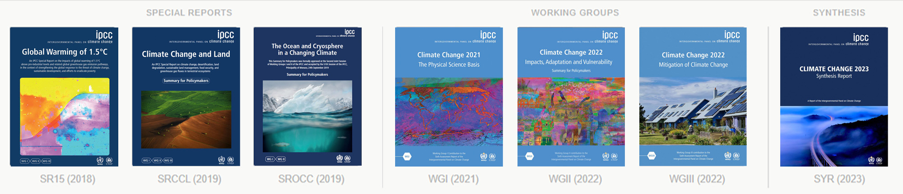
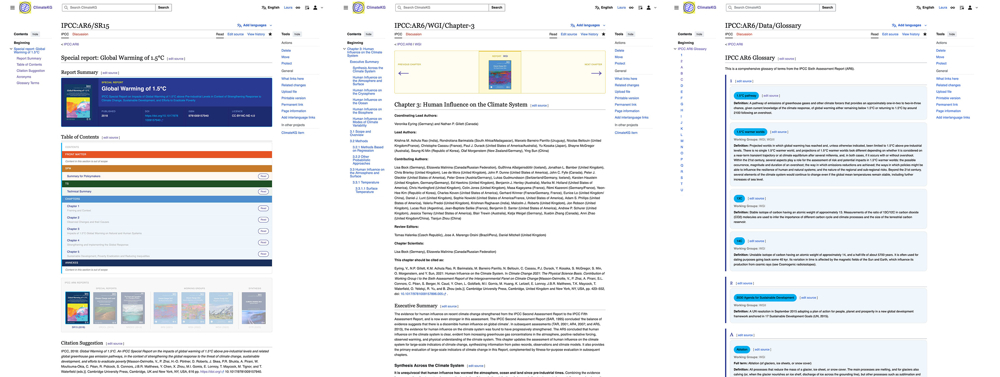
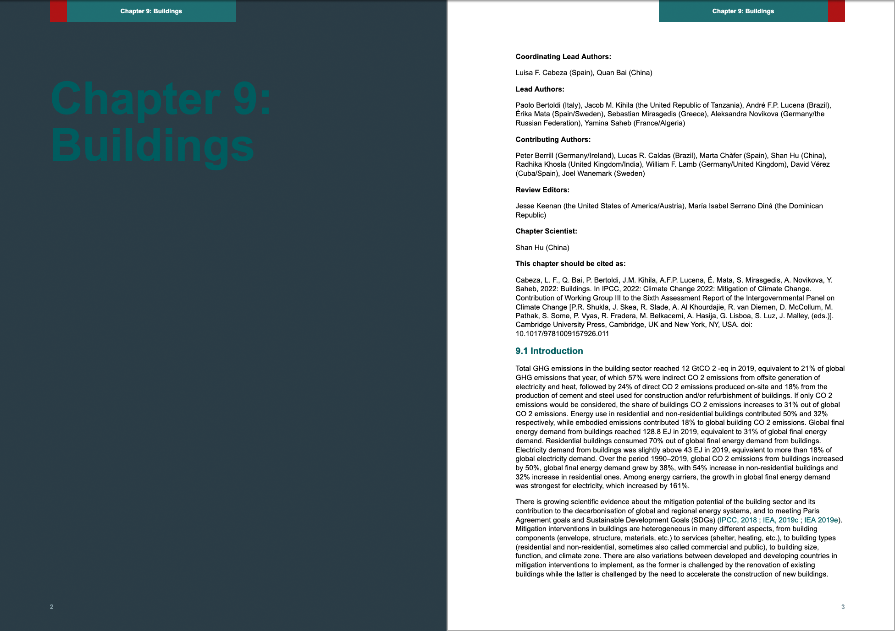

A community knowledge graph: Based on FAIR Data & Open Science Principles
Simon Worthington & Laura Oldenbourg — Open Science Lab, TIB – Leibniz Information Centre for Science and Technology
2026-06-10
About ClimateKG

Climate Knowledge Graph (ClimateKG) is a yearlong R&D project to create a knowledge graph of the IPCC Sixth Assement Report (AR6). The project has been funded by TIB Innovation Fund and is made in cooperation with #semanticClimate community (India, Germany, UK, and more).
The ClimateKG knowledge graph is built using Wikibase and MediaWiki.
The goal is to be a resource for data scientists, for citizen science activities, and to distribute data to Wikidata.
A multilateral panel of 195 nations that reviews the global scientific literature to map out climate scenarios for the next 100 years combining science, policy, and politics.
AR6 ( \(\approx\) 5-8 year cycle since 1988): 932 authors; 7 Reports; >8 million words; 10,047 pages; 48,400 citations; 66,834 data sets; 2,136 images; 1,910 Acronyms; 920 Glossary items; 5 languages+ (partial).*
Problem: For the public to trust climate science it has as open
Headline issues:
Search and SEO limited
Not easy to reuse
Formats of Web CMS HTML and PDF not suitable for data science
Referenced materials not interlinked - so only manual tracking to find a named data set, etc
Parts not easily available - Methodology, Supplementary material
Examples:
Links only to top levels: Reports, Glossary website, Author listing website etc.
Glossary terms have no links to reports
Author lists have no link to chapters
Figures listed on web pages with no DOIs
Citations on websites and not research repositories
Solution: Apply the vision of the Semantic Web 🕸️
Link all of the parts and make machine readable — AKA a Knowledge Graph
Linked Data: Interlinked data with unique identifiers and standard formats
FAIR Data: Findable, Accessible, Interoperable, and Reusable
Overview of work packages
flowchart LR
subgraph Data Sources
A[Scoping data sources +<br>Data Modeling]
end
subgraph Data Retrieval
subgraph IPCC
B[Text / Images:<br>Scrape + Convert]
end
subgraph Other Sources
C[Supporting Data Collection]
end
end
subgraph Data Import
D[Import Text / Images]
E[Import Supporting Data]
end
subgraph DevOps
F((MediaWiki + Wikibase))
end
subgraph Data Output
G[Browse in MediaWiki]
H[Paged Media Output]
I[Data Visualisations]
J[More...]
end
A --> B
B --> D
A --> C
C --> E
D --> F
E --> F
F --> G
F --> H
F --> I
F --> J
From Siloed Data to FAIR Data
Finding the sources, retrieving the data, storing it, preparing different ways of outputting and visualizing it, and making it available for reuse
Scoping Data Source & Data Modeling
SW
Data Retrieval
graph LR
subgraph IPCC Website
C[Chapter Source Urls]
C1[Text]
C2[Assets]
C3[Data]
end
D(["Scrape"])
L(["Clean"])
A(["Find/Extract images"])
B(["Collect information"])
E(["Convert"])
F["HTML files for each Chapter"]
G["Wikitext files"]
H[Import]
I[Assets]
K[HTML location, PDF location, doi, OpenAlex ID, licence etc.]
C --> C1
C --> C2
C --> C3
C1 --> |Scrape using WGET| D
D --> L
L --> F
F -->|Pandoc| E
E --> G
G -->|ready for| H
C2 --> A
A --> I
I -->|ready for| H
C3 --> B
B --> K
K -->|ready for| H
• Building a semi-automated scraping system from Web to MediaWiki/Wikibase
• Using the IPCC websites as a starting point, developing a method for scraping text, assets, and additional data
• Preparing the data for import into a MediaWiki/Wikibase instance
Collecting Supporting Data
flowchart TB
A((Report))
B((Chapter))
AB1(Bibliographic Data)
C((Contributor))
C1(Name)
C2(Role)
C3(Gender)
C4(Country)
C5(Affiliation)
D((Glossary))
D1(Term)
D2(Definition)
E((Acronyms))
E1(Acronym)
E2(Description)
C --> C1
C --> C2
C --> C3
C --> C4
C --> C5
D --> D1
D --> D2
E --> E1
E --> E2
A --> AB1
B --> AB1
• Additional data from various sources, e.g. IPCC data repositories, CrossRef, etc.
• Preparing the data for import into Wikibase
Import Scrape Data
SW
Import Supporting Data
SW
Browsing the Corpus in MediaWiki

• Cleaning the chapter content directly in MediaWiki
• Adding glossary and acronym content to MediaWiki
• Building navigation and browsing templates for the corpus
Output Option: CSS Paged Media
flowchart LR
A[MediaWiki]
B(API)
C[Output]
E[Other options, like Data dump or SPARQL query]
H[HTML]
I[CSS Paged Media]
J[Typesetting system]
A --> E
A --> B
B --> H
I --> J
H --> J
J --> C

• One possible output option: using CSS Paged Media to typeset the corpus content into a print-ready format